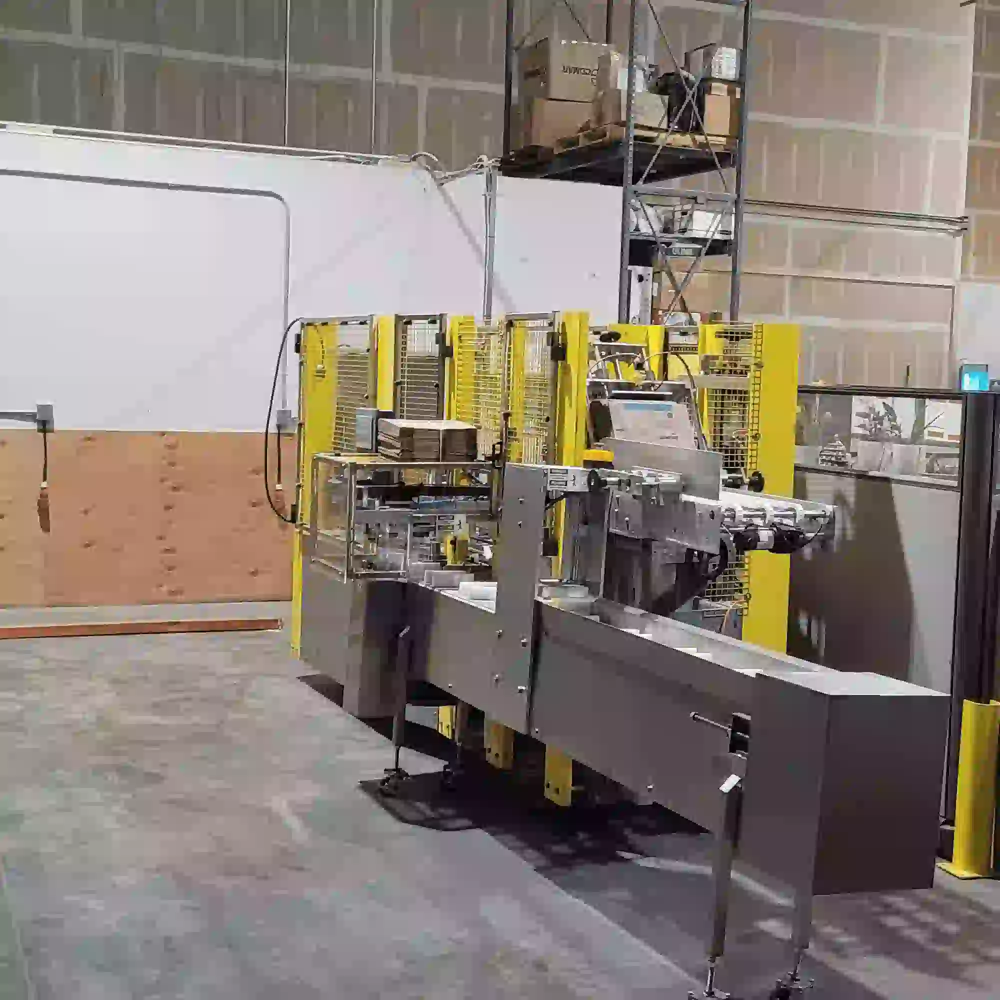
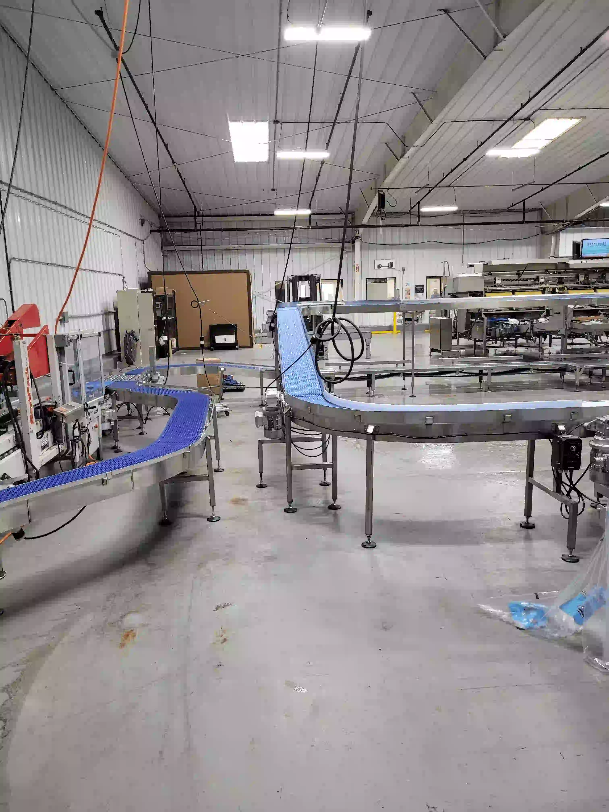

Custom Automated Equipment for Washdown Environments
At DLB Integrators, we specialize in designing and fabricating custom stainless steel equipment tailored for automated integration in food industry environments.
Why Choose Custom Equipment?
Our custom-built solutions are designed to meet your unique facility needs, ensuring washdown compliance, durability, and seamless integration with existing machinery.
